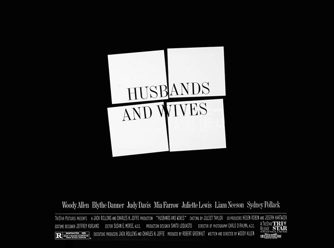
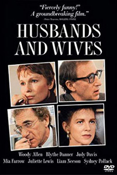
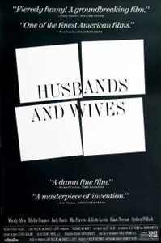
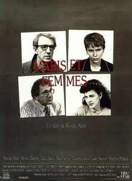

One of Woody Allen's most seemingly biographical films, Husbands and Wives opens with upper-middle class Manhattan couple Sally (Judy Davis) and Jack (Sydney Pollack) announcing to their best friends, the Roths, that they are splitting up. Gabe Roth (Allen) and his wife Judy (Mia Farrow) are taken aback by their casual revelation. Jack begins dating his dim, but sexy, aerobics instructor and Sally starts up a tentative romance with Michael (Liam Neeson).
Gabe and Judy begin analyzing their marriage, discovering that they might not be meant to stay together. English professor Gabe begins a serious flirtation with a student of his named Rain (Juliette Lewis) and Judy begins to have feelings for Michael. Eventually, Sally and Jack reconcile, but have not improved their relationship. Gabe and Judy end up going their separate ways.
Husbands And Wives was seemingly influenced by Ingmar Bergman's Scenes From a Marriage.
Woody Allen wanted to shoot the film in 16mm to give the feel of a documentary to the viewer, but TriStar was against this, and made him shoot in 35mm. Then, hoping to piggyback on the scandal surrounding Woody Allen's break-up with Mia Farrow, TriStar opened the film on 865 screens, the largest amount ever given over to a Woody Allen picture. They were rewarded with an opening weekend of US$ 3.52 million, the biggest ever for an Allen film.
Juliette Lewis replaced Emily Lloyd. Lloyd was originally cast in the role of Rain, and footage was shot. Allen decided it wasn't working, and replaced her with Lewis.
Jane Fonda was originally offered the role of Sally. However, talks broke down when Fonda and Allen disagreed on the aesthetics of the character.
Allen said in an interview that the reason he shot the film the way he did was that he wanted to break the usual rules of filmmaking. He cut scenes right in the middle of dialogue, he used hand-held cameras for no particular reason and did not care if he showed the side or the back of a performer's head during a scene. Allen said for this reason, he felt this film was one of his best.
"You use sex to express every emotion except love."
"In all respects, this is a full meal, as it deals with the things of life with intelligence, truthful drama and rueful humor." - Todd McCarthy : Variety
"Allen's conception of character is as banal and shallow as ever, but the lively performances of some of his actors and the novelty of the film's style make this more watchable than many of his features." - Jonathan Rosenbaum : Chicago Reader


